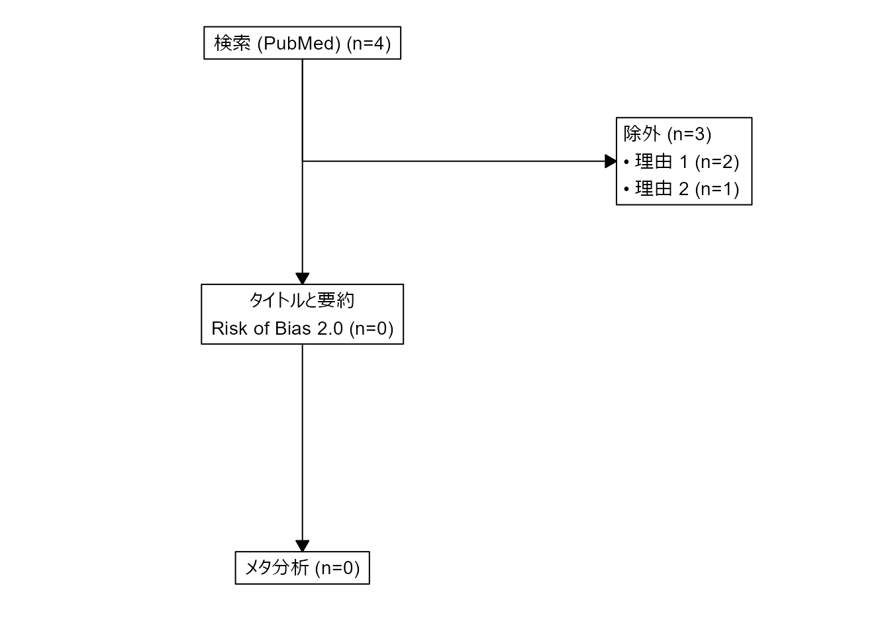

12 臨床研究
https://cran.r-project.org/web/views/ClinicalTrials.html.
12.1 メタ分析
Tip
TIP 117: フローチャート
メタ分析ですが、一番使いやすいのは RCT 用のパッケージ {consort} です。
データフレームに、研究名、除外基準１、除外基準２の列を作成します。除外基準には、理由を文字列で書きます。
このデータフレームを、以下の様に処理します。
library(consort)
out <- consort_plot(data = dfMeta,
orders = c(Study = "検索 (PubMed)",
Excl1 = "除外",
Study = "タイトルと要約\nRisk of Bias 2.0",
Excl2 = "除外",
Study = "メタ分析"),
side_box = c("Excl1", "Excl2"),
cex = 0.9)
plot(out)
12.2 ランダム化
Tip
TIP 118: ブロックランダム化
{blockrand} パッケージは、ブロックランダム化を行う。引数には、全体のサンプルサイズ (n)、群数 (num.levels)、ブロックサイズ (block.sizes) などを指定する。
ブロックサイズを動的に変更することはできないようである。
返り値は、データフレームで、行数は n と同じまたは少し多い。
library(blockrand)
a <- blockrand(n = 59,
num.levels = 2, # three treatments
levels = c("1", "2"), # arm names
stratum = "stratum", # stratum name
id.prefix = "arm", # stratum abbrev
block.sizes = c(2,2), # times arms = 3,6,9
block.prefix = "block") # stratum abbrev
Tip
TIP 119: Pocock and Simon 法
Pocock and Simon 法は、最初の被験者は単純無作為化で、その後は既存の割付をみて群間差がないように割り付けていく方法です。
{covadap} パッケージの PocSim() 関数を使います。
まず、ダミーデータを作ってみましょう。n = 100 で、性別、年齢３区分、血圧３区分のデータフレームです。
df1 <- data.frame("gender" = sample(c("female", "male"), 100, TRUE, c(1 / 3, 2 / 3)),
"age" = sample(c("18-35", "36-50", ">50"), 100, TRUE),
"bloodpressure" = sample(c("normal", "high", "hyper"), 100, TRUE),
stringsAsFactors = TRUE){covadap} パッケージの PocSim() 関数を使ってランダム化し、df1 に group 列を追加します。
require(covadap)
res <- PocSim(df1, p = 0.85, print.results = TRUE)_________________________________________________________
Design: Pocock and Simon
Sample_size: 100
n_cov: 3
n_levels: 2 3 3
var_names: gender age bloodpressure
_________________________________________________________
IMBALANCE MEASURES
Loss: 0.46
Mahalanobis: 0.41
Overall Imb: 2
_________________________________________________________
STRATA IMBALANCES
gender age bloodpressure N.strata A.strata D.strata
1 male 36-50 hyper 7 4 1
2 male >50 normal 6 3 0
3 male >50 high 6 1 -4
4 male 18-35 normal 9 5 1
5 female >50 hyper 2 1 0
6 male >50 hyper 5 3 1
7 female >50 normal 3 3 3
8 female >50 high 6 4 2
9 female 18-35 normal 5 1 -3
10 male 18-35 high 9 5 1
11 female 18-35 hyper 4 3 2
12 female 36-50 hyper 1 0 -1
13 female 36-50 normal 4 1 -2
14 male 36-50 normal 10 6 2
15 male 36-50 high 7 3 -1
16 male 18-35 hyper 9 4 -1
17 female 36-50 high 4 2 0
18 female 18-35 high 3 2 1
_________________________________________________________
WITHIN COVARIATE IMBALANCES
gender.male: 0
gender.female: 2
age.36-50: -1
age.>50: 2
age.18-35: 1
bloodpressure.hyper: 2
bloodpressure.normal: 1
bloodpressure.high: -1df1$group <- res$Assignments群間の比較をしてみましょう。
library(tableone)
CreateTableOne(c("gender","age","bloodpressure"),"group",df1) Stratified by group
B A p test
n 49 51
gender = male (%) 34 (69.4) 34 (66.7) 0.938
age (%) 0.924
>50 13 (26.5) 15 (29.4)
18-35 19 (38.8) 20 (39.2)
36-50 17 (34.7) 16 (31.4)
bloodpressure (%) 0.924
high 18 (36.7) 17 (33.3)
hyper 13 (26.5) 15 (29.4)
normal 18 (36.7) 19 (37.3) バランスもよく、群間の有意差もみられない無作為化ができました。